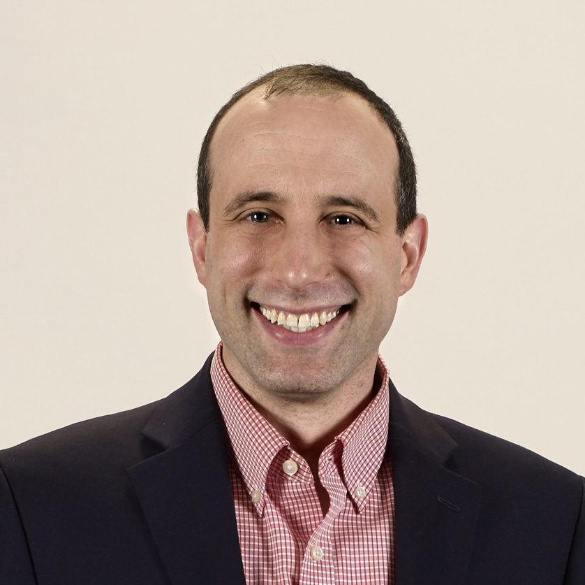
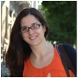
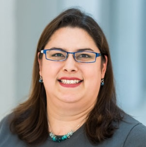
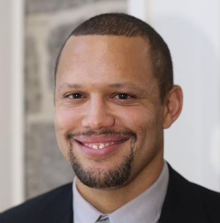
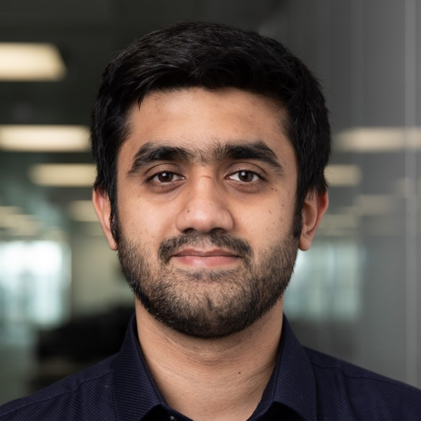

-

Aaron Adler
BBN Technologies
President: 2019–present Board Member: 2012–present Vice-President: 2012–2019Dr. Aaron Adler received his Ph.D. in Computer Science and Electrical Engineering from MIT in 2009. He is currently a Senior Scientist at Raytheon BBN Technologies in Columbia, MD and Cambridge, MA.
-

Natasa Miskov-Zivanov
University of Pittsburgh
Vice-President: 2019–present Board Member: 2012–present Clerk: 2012–2019Dr. Natasa Miskov-Zivanov received her Ph.D. in Electrical and Computer Engineering from Carnegie Mellon University in 2009. She is currently an Assistant Professor at the University of Pittsburgh.
-

Traci Haddock-Angelli
Asimov
Treasurer: 2012–present Board Member: 2012–presentDr. Traci Haddock-Angelli earned her doctorate in marine microbiology from the University of Rhode Island in 2010. She is currently the Director of Community at Asimov.
-

Douglas Densmore
Boston University
Board Member: 2012–present President: 2012–2019Dr. Douglas Densmore received his Ph.D. in Electrical Engineering from UC Berkeley in 2007. He is currently an Associate Professor in Electrical and Computer Engineering and in Biomedical Engineering at Boston University.
-

Prashant Vaidyanathan
Microsoft Research
Clerk: 2019–presentDr. Prashant Vaidyanathan received his Ph.D. in Computer Engineering from Boston University in 2019. He is currently a Researcher at Microsoft Research in Cambridge, UK.